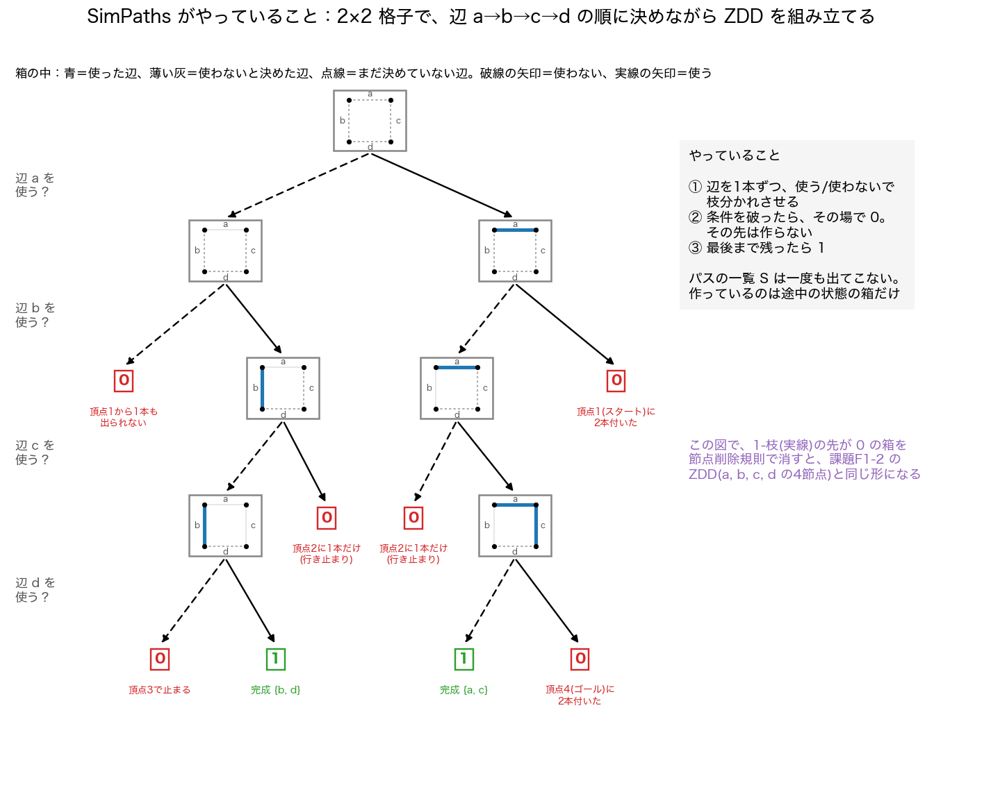
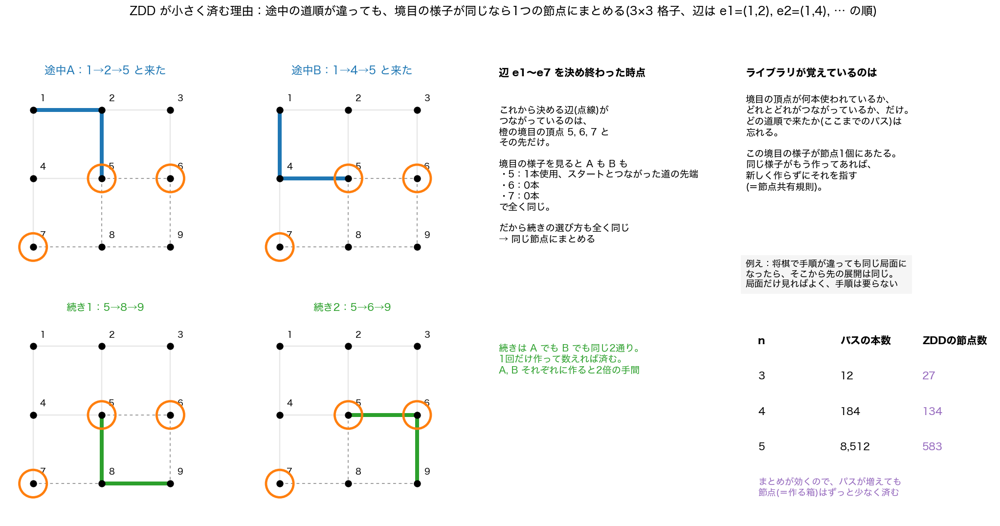
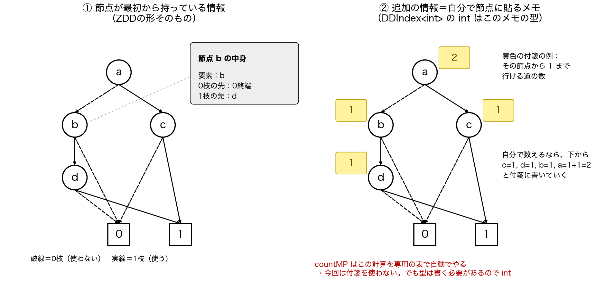
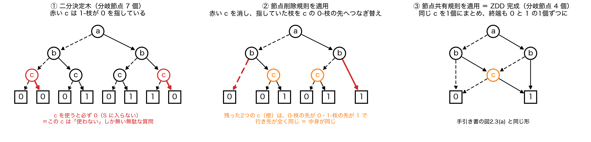
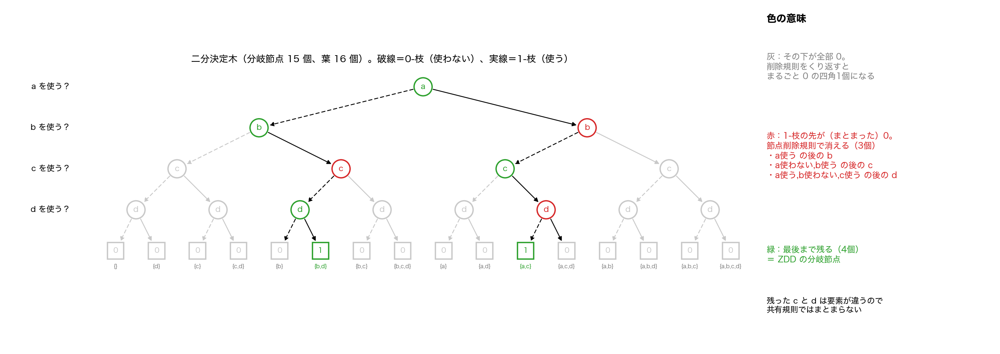
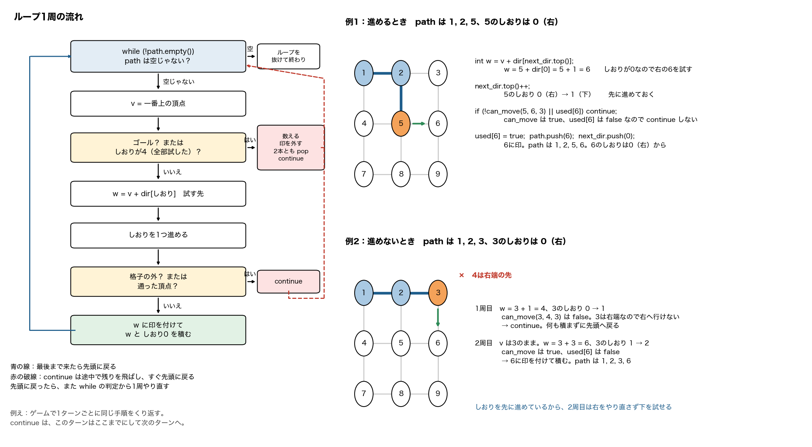
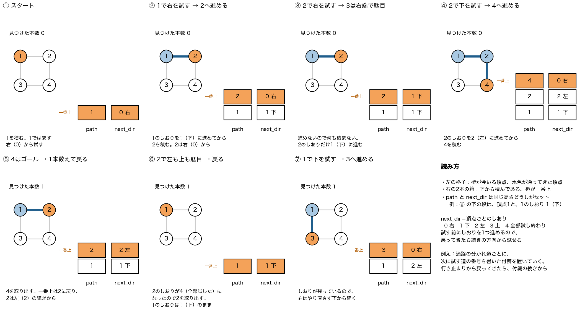

10/14(水) 10:15から S414、和佐先生の居室
最終更新 10/14 07:27。青い印は10/14に自分で質問して足したカード
黄色の印が付いたカードは、友達が実際に聞かれた質問。答え方の例は先生に話す想定なので、です・ます調にしてある。
n×nの格子の左上から右下へのパスの総数を、ZDDを使う方法と、パスを1本ずつ数える素朴な方法で求めて、パスの数と実行時間を比べました。また、2×2の格子のパスを表すZDDを手で書いて、二分決定木よりどれくらい小さくなるかを確かめました。ZDDは12×12の約1.8×10²⁹本を31.119秒で数えられましたが、素朴な方法は7×7で約6分かかりました。
F1-1では、ライブラリのZDDを使って、2×2から12×12までの格子のパスの総数と実行時間を求めました。F1-2では、2×2の格子のパスを表す二分決定木とZDDを手で書いて、分岐節点の数を比べました。F1-3では、素朴なアルゴリズムを2つ自分で考えて、同じようにパスの数と時間を測りました。
同じ頂点を2回通らない道のことです。遠回りする道も含むので、高校で習った最短経路の組合せの公式では求められません。例えば3×3では、最短経路は6本ですが、パスは12本あります。
まずGBaseのインスタンスを作って、SetGridで格子グラフを作ります。次にSimPathsに始点の頂点1と終点の頂点n²を渡して、すべてのパスを表すZDDを作ります。そのZDDをDDIndexに渡して、countMPでパスの総数を数えて出力しました。
GBase gb; gb.SetGrid(9,9); // 10×10 ZBDD z = gb.SimPaths(1, 100); // 1 から 100 へのパス DDIndex<int> index(z); mpz_class x = index.countMP();
格子グラフの頂点1からn²へのすべてのパスを表すZDDを作って返す関数です。パスの数はSimPathsではなく、そのZDDをDDIndexに渡して、countMPで数えました。


| n | パスの本数 | ZDDの分岐節点数 |
|---|---|---|
| 3 | 12 | 27 |
| 4 | 184 | 134 |
| 5 | 8,512 | 583 |
SetGridの引数は、x軸とy軸それぞれの辺の本数だからです。SetGrid(x, y)で(x+1)×(y+1)の格子ができるので、n×nの格子にはn−1を渡します。
多倍長整数の型です。普通の整数型は表せる大きさに上限がありますが、多倍長整数は桁が足りなくなると自動で広げるので、とても大きな数も正確に扱えます。パスの総数は格子が大きくなるとすぐに普通の整数型の範囲を超えるので、countMPは多倍長整数で返します。
intは32ビットで、約21億、正確には2147483647までです。表1では7×7の575780564までは入りますが、8×8の789360053252で超えます。64ビットのlong longでも約9.2×10¹⁸までなので、10×10の約4.1×10¹⁹で超えます。
| 型 | ビット | 最大値 | 超える格子 |
|---|---|---|---|
| int | 32 | 2147483647、約2.1×10⁹ | 8×8 |
| long long | 64 | 9223372036854775807、約9.2×10¹⁸ | 10×10 |
| unsigned long long | 64 | 18446744073709551615、約1.8×10¹⁹ | 10×10 |
| mpz_class | 可変 | メモリが続く限り上限なし | なし |
DDIndexの< >の中は、節点ごとに持たせる追加の情報の型です。今回はcountMPで数えるだけで追加の情報を使わないので、手引き書の指示どおりintにしました。
C++の変数宣言は、型、変数名、作るときに渡す値、の順に並びます。DDIndex<int>が型、indexが自分で付けた変数名、(z)は作る瞬間にコンストラクタへ渡すZDDです。
DDIndex<int> index (z); 型 変数名 作るときに渡す値
違います。zはZBDD型で、SimPathsが作ったZDDそのものです。<int>はzとは関係なく、節点ごとの追加の情報の型を決めているだけです。
ZBDD z = gb.SimPaths(1, 100); // z は ZBDD 型 DDIndex<int> index(z); // int は付箋の型
ZDDの節点は、要素、0枝の先、1枝の先の3つを最初から持っています。追加の情報は、それとは別に自分の計算のために節点ごとに書き込める付箋のようなもので、node.valueで読み書きします。<int>はその付箋に書く値の型です。

index.terminal(0).value = 0; // 0終端の付箋に 0
index.terminal(1).value = 1; // 1終端の付箋に 1
for (int level = 1; level <= index.height(); ++level) { // 下の段から
for (ullint j = 0; j < index.size(level); ++j) { // 段の節点を1個ずつ
DDNode<int> node = index.getNode(level, j);
node.value = node.child(0).value + node.child(1).value;
}
}
std::cout << index.root().value; // 根の付箋がパスの総数
パスの総数は格子が大きくなるほど急激に増え、増える倍率自体もどんどん大きくなりました。2×2から3×3で約6倍、4×4から5×5で約46倍、11×11から12×12では約11.6万倍です。一方、ZDDの実行時間は6×6以降でnを1増やすごとに2.4倍から4.7倍で、パスの数の増え方よりはるかに緩やかでした。
| 格子 | パスの総数 | 時間 [s] |
|---|---|---|
| 3×3 | 12 | 0.000 |
| 4×4 | 184 | 0.005 |
| 6×6 | 1262816 | 0.022 |
| 7×7 | 575780564 | 0.053 |
| 10×10 | 約4.1×10¹⁹ | 1.623 |
| 12×12 | 約1.8×10²⁹ | 31.119 |
timeコマンドで測って、userの値を使いました。userはプログラム自身が計算に使ったCPU時間なので、ほかの処理を待っていた時間が入るrealより、アルゴリズムの計算時間を比べるのに向いているからです。
手引き書にあるように、1本のパスを数えるのに1ナノ秒かかると仮定しました。12×12のパスは約1.8×10²⁹本なので、1.8×10²⁹ナノ秒、つまり約1.8×10²⁰秒で、年に直すと約5.8兆年になります。ZDDはパスを1本ずつ作らないので31秒で済みました。
ZDDは、パスの集合を、共通する部分をまとめて、パスにならない組合せを除いた小さな図で表します。数えるときもその図をたどるだけで、パスを1本ずつ作らないからだと考えました。
2×2の格子の4本の辺をa、b、c、dとして、まず辺をこの順に使うか使わないかで枝分かれさせる二分決定木を書きました。その木に、節点削除規則と節点共有規則を、適用できなくなるまで繰り返しました。


a ─使う────→ c ─使う→ 1
│ └使わない→ 0
└使わない→ b ─使う→ d ─使う→ 1
│ └使わない→ 0
└使わない→ 0
同じ2つの組合せを表すのに、二分決定木は分岐節点が15個必要でしたが、ZDDは4個で、約4分の1になりました。終端節点も16個から、0と1の2個になりました。
根はaです。aを使うと次はcに行き、cを使えば1終端です。aを使わないとbに行き、bを使うとdに行き、dを使えば1終端です。それ以外の枝は0終端に行きます。根から1終端までの道がa、cとb、dの2本なので、パスが2本あることを表しています。
1枝が0終端節点を指しているということは、その要素を使うと必ず条件を満たさないということです。なので、その節点で枝分かれさせる必要がなく、使わない側の先だけ残せばいいからです。ZDDでは、道の途中に出てこない要素は使わないと読みます。
頂点1から出発して、右、下、左、上の優先順位で、格子の外に出ず、まだ通っていない頂点に進みます。ゴールに着いたら1本数えます。ゴールに着いたときや、4方向とも試し終えたときは、1つ前の頂点に戻って次の方向を試します。通ってきた頂点はスタックに積んで管理しました。
その頂点は、今たどっている道では使い終わりましたが、別の道では通ってもいいからです。印を残したままだと、ほかのパスがその頂点を通れなくなって、数え漏れが出ます。
スタックが空になったら終わります。始点の1まで戻ってきて、1で4方向を全部試し終えると、1も取り出されて空になります。つまり、すべての道を試し終えたときです。同じ頂点は2回通らないし、各頂点で試す方向の番号は増えるだけなので、同じ道を2回たどらず、いつか必ず終わります。
必ず通る頂点1とn²の間に、間の頂点2からn²−1のうちいくつかを選んで並べます。隣り合う頂点がすべて1歩で動ける並びなら、パスとして1本数えます。パスはすべての頂点を通るとは限らないので、選ぶ個数は0個からn²−2個まで全部調べました。
頂点の番号で見分けました。右端はnで割った余りが0、左端は余りが1なので、そこからは右や左に動けません。下端は番号にnを足すとn²を超え、上端はnを引くと1より小さくなるので、そこからは下や上に動けません。
4つの部品でできています。1歩で動けるかを判定するcan_move、方法1のcount_by_priority、方法2のarrange、引数を受け取ってどちらかを呼ぶmainです。
| 部品 | 役割 |
|---|---|
| can_move(a, b, n) | 頂点aからbへ1歩で動けるか。両方の方法で使う |
| count_by_priority(n) | 方法1。スタックで右下左上の順に進んで戻る |
| arrange(order, used, n) | 方法2。並べ方を再帰で全部作って調べる |
| main | ./naive n 方法 の n と方法を受け取って呼び分ける |
bool can_move(int a, int b, int n) {
if (b == a + 1) return a % n != 0; // 右へ
if (b == a - 1) return a % n != 1; // 左へ
if (b == a + n) return a + n <= n * n; // 下へ
if (b == a - n) return a - n >= 1; // 上へ
return false;
}
bがaの右、左、下、上のどれにあたるかを番号の差で見分けて、その方向に動けるかを返します。右なら、aが右端、つまりnで割った余りが0でなければ動けます。左は余りが1でなければ、下はa+nがn²以下なら、上はa−nが1以上なら動けます。4つのどれでもなければ隣ではないのでfalseです。
そうです。long longの2語で1つの型の名前で、64ビットの整数です。intは32ビットで約21億までですが、long longは約9.2×10¹⁸まで入ります。方法1と方法2のパスの数はlong longで数えました。
const int dir[4] = {+1, +n, -1, -n}; // 右、下、左、上
const int goal = n * n;
std::vector<bool> used(n * n + 1, false); // 通った頂点の印
std::stack<int> path; // 通ってきた頂点
std::stack<int> next_dir; // 各頂点で次に試す方向
long long count = 0;
path.push(1); next_dir.push(0); used[1] = true; // 1から、右を試すところから
while (!path.empty()) { // スタックが空になるまで
int v = path.top(); // 今いる頂点
if (v == goal || next_dir.top() == 4) {
if (v == goal) count++; // ゴールなら1本数える
used[v] = false; // 印を外して
path.pop(); next_dir.pop(); // 1つ前に戻る
continue; // ループの先頭へ
}
int w = v + dir[next_dir.top()]; // 試す先
next_dir.top()++; // この方向は試し済みにする
if (!can_move(v, w, n) || used[w]) continue; // 進めなければ次の方向へ
used[w] = true; path.push(w); next_dir.push(0); // 進む。wでは右から試す
}

頂点は上の段が1、2、下の段が3、4です。右下左上の順に試して、ゴールの4に2回着くので2本です。

| 今いる頂点 | 試す方向 | 先 | 結果 | path |
|---|---|---|---|---|
| 1 | 右 | 2 | 進む | 1, 2 |
| 2 | 右 | 3 | 右端なので駄目 | 1, 2 |
| 2 | 下 | 4 | 進む | 1, 2, 4 |
| 4 | ゴール、1本目。戻る | 1, 2 | ||
| 2 | 左 | 1 | 通った頂点なので駄目 | 1, 2 |
| 2 | 上 | 0 | 上端なので駄目 | 1, 2 |
| 2 | 4方向終わり。戻る | 1 | ||
| 1 | 下 | 3 | 進む | 1, 3 |
| 3 | 右 | 4 | 進む | 1, 3, 4 |
| 4 | ゴール、2本目。戻る | 1, 3 | ||
| 3 | 下、左、上 | 5, 2, 1 | 下端、左端、通った頂点で全部駄目。戻る | 1 |
| 1 | 左、上 | 0, −1 | 左端、上端で駄目。戻る | 空 |
進めるかどうかを確かめてから進むためです。先に used[w] = true や path.push(w) をすると、格子の外の頂点や、すでに通った頂点にも進んでしまいます。
!can_move(v, w, n) || used[w] は、wへ行けない、または、wはもう通った、という意味です。どちらか1つでも当てはまれば true になって continue し、どちらも当てはまらないときだけ進みます。
| 例 3×3 | can_move | !can_move | used[w] | 全体 | 動き |
|---|---|---|---|---|---|
| 5から右の6、6は未通過 | true | false | false | false | 進む |
| 5から上の2、2は通過済み | true | false | true | true | continue |
| 3から右の4、右端の先 | false | true | 見ない | true | continue |
| continue の場所 | 起きるとき | そのあと |
|---|---|---|
| 上の if、しおりが4 | 4方向全部だめ、またはゴール | pop して1つ前の頂点に戻る |
| 下の if、!can_move || used[w] | 今試した1方向だけがだめ | 同じ頂点のまま、次の周で次の方向を試す |
long long count_arranged = 0; // パスになった並べ方の数
long long count_tried = 0; // 調べた並べ方の数
void arrange(std::vector<int> &order, std::vector<bool> &used, int n) {
count_tried++; // 今の並べ方を1つ調べる
bool ok = true;
int prev = 1; // 1から始める
for (int v : order) { // 並べた頂点を前から順に
if (!can_move(prev, v, n)) { ok = false; break; }
prev = v;
}
if (ok && can_move(prev, n * n, n)) count_arranged++; // 最後からn²へ動ければパス
for (int v = 2; v <= n * n - 1; v++) { // 間の頂点を1つずつ
if (used[v]) continue; // もう並べた頂点は飛ばす
used[v] = true; order.push_back(v); // 後ろに足して
arrange(order, used, n); // その並べ方で自分を呼ぶ
order.pop_back(); used[v] = false; // 足した頂点を外して元に戻す
}
}
間の頂点は2と3の2個です。空の並べ方から始めて、5通りを調べて、そのうち2通りがパスでした。
| 順 | order | 調べる並び | 結果 |
|---|---|---|---|
| 1 | 空 | 1, 4 | 隣ではないので駄目 |
| 2 | 2 | 1, 2, 4 | パス |
| 3 | 2, 3 | 1, 2, 3, 4 | 2から3は右端なので駄目 |
| 4 | 3 | 1, 3, 4 | パス |
| 5 | 3, 2 | 1, 3, 2, 4 | 3から2は左端なので駄目 |
実行するときに打った言葉を受け取る仕組みです。./naive 7 1 と打つと、argc が3、argv[1] が文字列の 7、argv[2] が文字列の 1 になります。std::atoi で文字列を整数に直して、n と方法の番号にしています。
格子の大きさnと方法の番号は、実行時に引数で与えるので、コンパイルし直さずに変えられます。方法1は5×5までは0.01秒未満でしたが、6×6で0.772秒、7×7で369.367秒、約6分になりました。方法2は4×4で7571.014秒、約2時間6分かかりました。それ以上は時間がかかりすぎるので測りませんでした。
./naive 7 1 // 7×7 を方法1で
6×6から7×7で時間は約478倍になり、パスの総数の倍率の約456倍に近かったです。方法1はパスを1本ずつたどるので、時間はパスの総数にほぼ比例すると考えました。少し大きいのは、格子が大きいと1本のパスが長くなることや、行き止まりになる途中までの道もたどるからだと考えました。
方法1は動ける頂点にしか進まないので、パスにならない並べ方をはじめから作りません。方法2は動けるかどうかに関係なく並べ方を作ってから調べるので、ほとんどが無駄な確認になります。4×4では236975164805通りを調べて、パスだったのは184通りだけでした。
0.01秒未満のごく短い時間なので、timeコマンドの表示の細かさや、測ったときの計算機の状態による誤差が出たと考えました。
2つのアルゴリズムの考え方は自分で考えて、C++で書く所に生成AIを使いました。
7×7では、方法1の369.367秒に対してZDDは0.053秒で、約7000倍の差がありました。パスの総数は格子が大きくなるほど急激に増えるので、1本ずつ数える方法では大きな格子は数えられず、ZDDのように共通する部分をまとめて数える必要があるとわかりました。
平面上の曲線から取った点だけを使って、元の曲線を近似的に復元する曲線の再構成を、NN-Crustというアルゴリズムで実装しました。F2-1で各点を最も近い点と結ぶ処理を、F2-2で線分が1つしか出ていない点を反対側の最も近い点とも結ぶ処理を作りました。F2-3では自分で描いた点群に使って、どんな点群が苦手かを調べました。
曲線Σから抽出された点群Pだけが与えられて、Σを近似的に復元する問題です。点には順番が付いていないので、どの点とどの点を結べば元の曲線になるかを、点の位置だけから決めます。
黒い点が入力した点で、線分が再構成した曲線です。出力されるPDFの1ページ目が再構成した曲線、2ページ目が入力した点群です。F2-3の図は、左が入力した点群、右が再構成した曲線です。
アルゴリズムの2〜4行目にあたります。各点pについて、p以外のすべての点との距離の2乗をCGAL::squared_distanceで求めて、いちばん小さい点qを選びます。線分(p, q)がまだ入っていなければ追加します。
if(min_distance > distance or min_q_index == n){
min_distance = distance;
min_q_index = j;
}
どの点が近いかを比べるだけなら、距離の2乗でも大小の順番は同じだからです。2乗のままなら平方根を計算しなくて済みます。
同じ線分を2回入れないためです。pとqがお互いを最も近い点として選び合うと、pの番とqの番で同じ線分ができるので、すでに入っていれば追加しないようにしています。向きが逆の線分も同じものとして判定します。
各点は最も近い点を1つ選ぶだけなので、どの点にも線分は少なくとも1つできますが、2つ目の線分ができるのは、ほかの点から最も近い点として選ばれたときだけです。お互いを選び合う2点は、ほかから選ばれない限り、その線分1つで閉じてしまい、隣の点の組とつながりません。そのため図1のように、2〜5個くらいの点のかたまりが間をあけて並びました。
closestは、点ごとに出ている線分の数を管理する配列です。線分が出ていなければ点の数n、ちょうど1つならその線分のもう一方の端点の番号、2つ以上なら−1にしました。update_closestは、点uと点vを結ぶ線分を追加したときに、uの値をnならvに、それ以外なら−1にします。1回でuの値しか変わらないので、uとvを入れ替えて2回呼びます。
アルゴリズムの5〜10行目にあたります。closestが0以上n未満、つまり線分がちょうど1つの点pだけを対象にして、その線分のもう一方の端をqとします。p、q以外の点rのうち、角rpqが90°より大きい点の中から、pに最も近い点を選んで線分(p, r)を追加します。条件を満たす点が無ければ何もしません。
CGAL::angle(q, p, r)を使いました。真ん中の引数を頂点とする角が90°より大きいときにCGAL::OBTUSEを返すので、pを頂点にした角rpqが鈍角かを判定できます。
if(CGAL::angle(q,p,r) == CGAL::OBTUSE){ ... }
角rpqが90°より大きい点は、pを通って線分pqに垂直な直線に対して、qと反対側にある点です。pのもう一方の隣はqの反対側にあるはずなので、そこに限ります。単に2番目に近い点を選ぶと、qのさらに先の点など、qと同じ側の点が選ばれて、来た方向に戻る線分ができることがあります。
何も追加しません。min_r_indexがnのままなら追加しないようにしました。最初はこの場合を考えていなくて、2つ目のループが正しく動かなかったので、アルゴリズムと1行ずつ照らし合わせて直しました。
いります。鈍角になる点rが1つも無いと、min_r_indexは最初に入れたnのままです。点の番号は0からn−1までなので、この条件が無いとpoints.at(n)で存在しない点を取り出そうとして、プログラムが止まります。アルゴリズムの8行目の、条件を満たす点rが存在するならという部分にあたります。
int min_r_index = n; // まだ見つかっていない印として n
... // 鈍角の点を探す
if(min_r_index != n){ // 見つかったときだけ
Segment(p, points.at(min_r_index)); // 線分を作る
}
授業で示されたプログラムと同じく、2つ目のループで線分を追加したときもclosestを更新しています。更新しないと、すでにほかの点から結ばれて線分が2つになった点も、自分の番では1つと判断されてもう1本結ばれ、線分が3つ出る点ができるからです。
図1で途切れていた所がつながって、輪が重なったばねのような1本の曲線になりました。ただ、線どうしが交わる所や、線の端では、本来と違う点どうしが結ばれました。距離と角度だけで隣を決めるので、交わる所ではもう一方の線の近い点を選んでしまい、端の点では反対側の点をもう1つの隣として結んでしまうからです。
配布されたgen_points.htmlで、マウスで線を描いて作りました。ボタンを押して動かしている間、取得間隔ごとに位置を整数の座標で記録します。取得間隔は初期値の20 msで点群1から5を作り、点の間隔の違いを調べるために、200 msで似た形の点群6から9を作りました。
NN-Crustが本来と違う点どうしを結んだのは、線が交差する所、線の端、別の部分の線が近くを通る所、同じ座標の点が重なる所の4つでした。それ以外は、どの点群でも描いた線のとおりに結ばれました。
交点の近くには2本の線の点が集まります。NN-Crustは、各点に前と後ろの隣が1つずつあるとして、距離と角度だけで隣を決めるので、まっすぐ進んだ先の点より、もう一方の線の近い点を隣に選んでしまうことがあります。点群1では交差する所の近くに線分が3つ出る点ができました。
線の端の点には本来、隣が1つしかありません。でもNN-Crustは、線分が1つしか出ていない点を途切れたかけらの端と考えて、反対側の点を探して結んでしまいます。点群2のように端の先に点が無くても、離れた所の点が反対側にあれば、長い線分で結ばれます。
描き終わりでマウスをゆっくり動かしたので、同じ座標の点が4組記録されていました。同じ座標の2点は距離が0なので、お互いを最も近い点として選び合い、長さ0の線分になります。そこでは反対側の向きが決まらないので、短い区間で線が途切れて、始点と別の点が結ばれました。同じ座標の点を除いて実行し直すと、全部描いた線のとおりに結ばれました。
点群1と点群6、点群4と点群8を比べると、点をまばらにした方が本来と違う点どうしを結んだ所が増えて、交差する所や線が近づく所以外でも起きるようになりました。同じ線の上で隣り合う点の間隔が、別の部分までの距離に近づくので、別の部分の点が最も近い点に選ばれやすくなったと考えました。一方、輪の点群7は20個とまばらでも、描いたとおりに結ばれました。
点の間隔が、曲線の別の部分までの距離より十分小さいことが関係していると考えました。そうなっていれば、各点の最も近い点は、同じ線の上の隣の点になりやすいからです。
自分の点群には、交差する輪や渦巻き、端のある線が入っていて、NN-Crustの苦手な所を含んでいたからです。交差する所と線が近づく所では別の線の点を、端では反対側の離れた点を結び、点群5では同じ座標の点で途切れました。
点が曲線の上に細かく並んでいて、曲線が交差せず端も無く、同じ座標の点も無い場合には、距離と角度だけで元の曲線をよく再構成できると考えました。